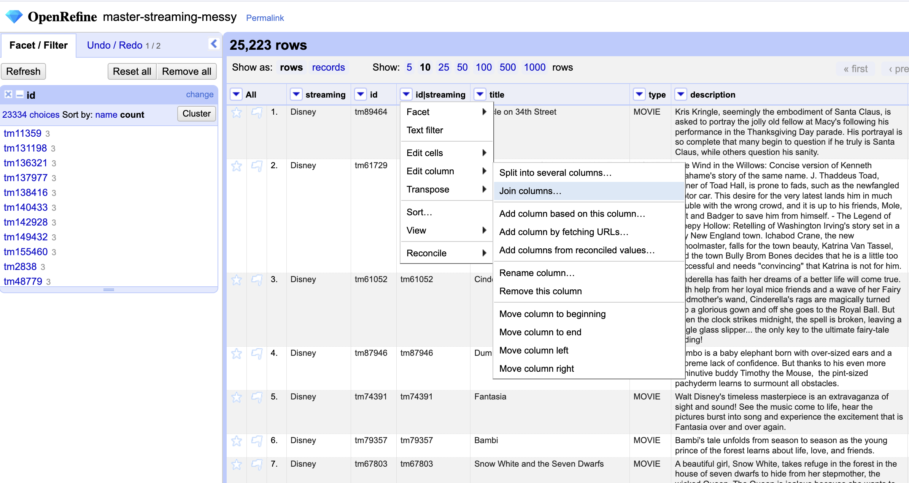

Exploring Data Types & Facets
Now, let’s dive into one of the most powerful and defining features of OpenRefine—facets—which also explains why its logo is shaped like a diamond. Facets can be metaphorically understood as aspects or angles of data variance in a given column
Faceting is a method of exploring and filtering data to better understand its structure and content. It allows us to more easily spots errors and outliers in the data. By applying multiple filters, you can quickly uncover patterns and inconsistencies, and isolate specific subsets of data for closer inspection or bulk editing. A facet groups together all the similar values within a column, allowing you to easily filter and refine your dataset. It’s also incredibly useful for editing values across many records at once.
Text Facets
One type of facet is called a ‘Text facet’. This groups all the identical text values in a column and lists each value with the number of records it appears in. The facet information always appears in the left hand panel in the OpenRefine interface.
After applying a text facet to the title column, you’ll notice that the number of unique choices differs from the total number of rows. This happens because a single title may appear across multiple streaming platforms, and also because different productions can share the same name. Let’s sort the facet by count to explore how often titles like Cinderella appear.
“Five times, right? Let’s click Include to review the items and check for any duplicates.
You’ll notice that each entry corresponds to a unique production, often from a different year or with a distinct plot, which is why they each have their own specific ID. However, it’s important to note that the same production might appear on multiple streaming services, sharing the same ID. While we don’t have duplicate entries within a single streaming service, we do need to check for cases where the same production appears under different services with the same ID.
Checking for Duplicates
To perform this check, we can create a text facet for the ID column. But before proceeding, we should exclude any values already filtered for ‘Cinderella’. If we don’t do this, the new facet will only apply to the selected rows and might not cover all instances of a production across streaming services.
Manually inspecting all the entries to check for duplicates would take a considerable amount of time. A simple workaround is to create a new column that combines the values from the ID and Streaming columns. Then, by running a Text facet and sorting by count, we can easily spot any duplicates:
First we add a new column based on the existing one…
We will give it a name. Let’s say id|streaming
And then, we ask to join the data from two columns into the new column…

And choose the columns we want to join and enter a separator (here we are using the pipe)…
By running a text facet on this new column and sorting by count, we can quickly confirm whether the IDs that appear more than once are indeed associated with different streaming services.
After reviewing the results, we can choose to delete this temporary column or even consider assigning a unique record ID to each row. For now, let’s keep things simple and undo the last few actions.
Wait—have you noticed the yellow pop-up banner in your project bar?
This warning shows how many transformations were applied and even gives you a preview of what the equivalent expression for those actions would look like. We’ll explore these expressions and how to use them more effectively in future episodes.
As you can see, a text facet can come in handy for providing some quick insights into patterns, and spotting potential inconsistencies or duplicates across your dataset.
Checking for Errors
Let’s now turn our attention to the classification column. This column should represent the ratings from The Classification and Rating Administration (CARA). How many unique values are represented in the dataset? You should find 18 distinct entries—correct? It appears that the original data collector could have enforced validation rules to ensure consistency in this field, but since that wasn’t done, we can use faceted analysis to identify inconsistencies or errors. How many could you identify? Have you noticed the question marks and NAs? What approach would you take to clean and standardize these entries?
Since those entries represent either non-existent data or uncertainty—and given that we already have many productions with unknown classifications (13,132)—we might consider setting those values to blank as well. To do this, we can first run a text facet and select the entries we want to amend:
Now that we have included those six choices and eight entries, we can apply a `common transform` and set those values as nulls.
Now, let’s run another text facet for the same column and check how many choices we have. But wait, have you noticed the empty string option? An empty string will work the same as null for most purposes. Can you guess when it will not be the case? An empty string ("") will not behave the same as null when you use functions or filters that specifically distinguish between null and empty. Setting it as null represent “no data”, making it more explicit the data is missing, unknown or not applicable. But let’s not get too sidetracked. We will cover more about transformations in the next episodes.
Now we will use faceting to look for potential errors in data entry in the streaming column. First, Scroll over to the streaming column and then, click the down arrow and choose Facet > Text facet.
Alright, in the left panel, you should now see a box containing every unique value in the streaming column along with a number representing how many times that value occurs in the column.
Sort the facet by both name and count. Do you spot any issues with the data? What are they?
Next, hover over one of the names in the facet list. You should see an option to edit it.
For example, you can click edit right next to Apple tv or even include other multiple choices and edit it manually to reconcile them all as one value Apple. As you can see, you can use this feature to correct the error right away. OpenRefine will then prompt you to apply the same fix to all matching values. However, OpenRefine offers even more advanced methods to identify and correct errors, which we’ll explore in the next section when we discuss clustering.
By the way, when working with facets, the left panel can start to look a bit cluttered. That’s perfectly normal—facets are not the end goal, but rather a tool to help guide transformations, as we’ll explore in the next lesson. You can close facets at any time and re-run them later if needed, or simply adjust their size to keep your workspace manageable.
Numeric Facets
When you import a table into OpenRefine, all columns are initially automatically treated as text, representing a string of sequential characters.
Only observations that include only numerals (0-9) can be transformed to numbers. If you apply a number transformation to a column that doesn’t meet this criteria, and then click the Undo / Redo tab, you will see a step that starts with Text transform on 0 cells. This means that the data in that column was not transformed.
For columns with numeric values we can convert it using the Edit cells > Common transforms. In this section, we’ll experiment with converting columns to numbers and explore the additional features and functionality this unlocks.
Sometimes there are non-number values or blanks in a column which may represent errors in data entry and we want to find them. We can do that with a Numeric facet. So if you try to create a numeric facet for the column release_year. The facet will be empty because OpenRefine sees those values as text strings.
To transform cells into numbers, click the down arrow for that column, then Edit cells > Common transforms… > To number. You will notice the values will change from left-justified to right-justified, and black to green color.
Date Type
The “date” type in OpenRefine is created when a column is explicitly transformed into dates—either by applying a built-in expression, using Edit cells → Common transforms → To date, or manually setting individual cells to the “date” data type.
Let’s take the release_year column as an example. When you apply the To date transformation, OpenRefine attempts to convert each cell into a standardized date format. It uses the ISO 8601 extended format with time in UTC, which looks like this: YYYY-MM-DDTHH:MM:SSZ
If the original values are just four-digit years, like:
1999
2005
2012
OpenRefine will interpret them as full dates by assuming January 1st as the default day and month. So, they’ll be transformed into:
1999-01-01T00:00:00Z
2005-01-01T00:00:00Z
2012-01-01T00:00:00Z
This default behavior allows OpenRefine to handle partial date inputs consistently, making it easier to sort, filter, and analyze date-based data.
We’ve covered the most commonly used facets in OpenRefine, but the platform also offers a range of advanced and custom facets that may be relevant to your specific project needs. We encourage you to explore the OpenRefine documentation for a deeper dive into these features.
Facets for Subsetting Working Dataset
Facets can be also very handy to subset the dataset and make it more easily manageable. Let’s say you want to focus only on the shows for a while, or even export this subset. How would you do that? You can perform a text facet for the column type and select show, you will notice the number of matching rows in the grid header will change accordingly. From now on, you will be only working with those rows, unless you click revert or close the facet panel.
If you want to export that subset of shows click export on the right side of the project bar and select your preferred format. As a reminder, the permalink will save all active facets for your project!